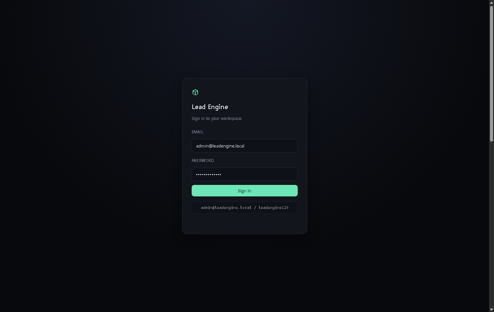
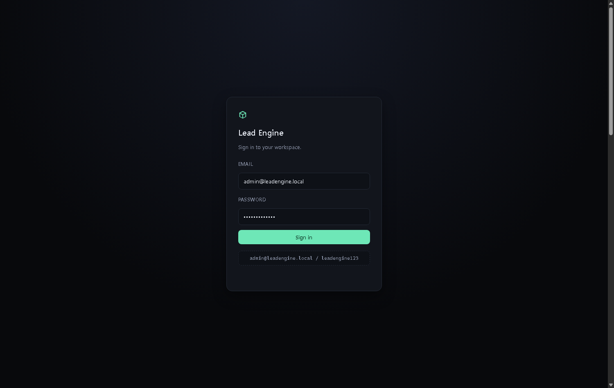
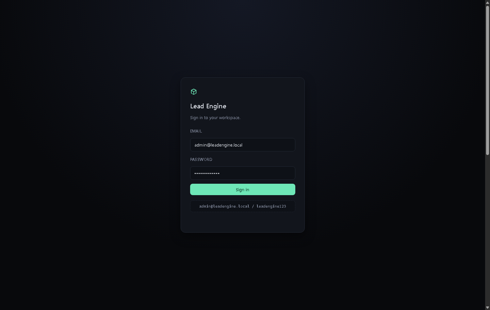
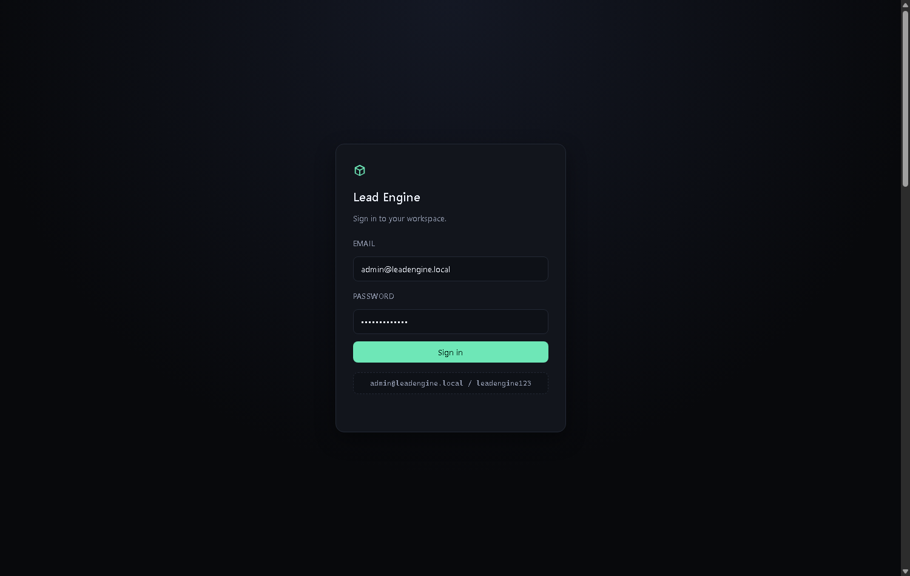

Lead Engine
Prospect search and contact enrichment: work emails, provider-sourced personal emails and phone numbers.
Overview#
Self-hosted prospecting and enrichment workspace inspired by SalesQL. Search by role, company, industry, location and headcount; reveal work email for one credit only when found; process LinkedIn URL and CSV enrichment jobs; verify emails; organize folders; run simulated campaigns with open/click tracking; connect AI agents using MCP. Real provider-backed details require your own API keys. Without one, the system can generate a work-email candidate from a public company domain and check MX, but never invents a personal email or phone.
What you get
- Prospector filters and natural-language filter parsing; searches cost 0 credits
- One credit per successful email reveal; no result means no charge
- Work email candidates use ranked patterns and MX checks
- Direct email and phone are returned only by configured providers
- LinkedIn URL and CSV enrichment jobs, folders and verifier
- Campaign sequences and tracking; send simulation by default
- Six MCP tools and a nine-screen UI
Prospector
Filter by title, company, industry, location, seniority and headcount. Searching never uses credits.
Contact reveal
Reveals work email confidence/status. One credit only when an email is found. Unavailable data is not fabricated.
LinkedIn URL enrichment
Parse profile URLs and enrich via configured Hunter, Apollo or PDL providers. Does not scrape LinkedIn or bypass sign-in/anti-bot controls.
Bulk CSV enrichment
Upload LinkedIn URLs, names/company, or email addresses. Poll jobs and download enriched CSV.
Email verifier
Syntax, role account, MX and optional SMTP checks. SMTP probe is off by default.
Folders and campaigns
Save contacts in lists. Build sequences and track opens/clicks. Sends are simulated unless SMTP is explicitly configured.
MCP and API
Search, reveal, enrich, verify, folders and credits via MCP/API.
Interface#
Local workspace UI: prospect search, enrichment, lists, verifier, campaigns and API/MCP settings.






Install#
From a clean machine to a running server in four commands.
Requirements
- Python 3.12
- uv
- Git
Step 1 · Clone
Get the service source.
git clone https://github.com/venugopal1902/replicas.git
cd replicas/services/lead-engineStep 2 · Install
Create environment.
uv sync --python 3.12Step 3 · Run enrichment tests
Uses real DNS. Provider APIs optional.
uv run python tests/test_enrichment.pyStep 4 · Start server
Local server on port 8500.
uv run python scripts/run_server.pyStep 5 · Open app
Development credentials; change before exposing.
http://localhost:8500
admin@leadengine.local / leadengine123Health check
curl http://localhost:8500/health| Surface | URL |
|---|---|
| Web UI | http://localhost:8500/ |
| API docs | http://localhost:8500/docs |
| MCP | http://localhost:8500/mcp |
Usage#
Search prospects
No credits are spent on search.
curl -X POST http://localhost:8500/api/search -H "Authorization: Bearer $TOKEN" -H "Content-Type: application/json" -d '{"filters":{"title":"Head of Talent","industry":"Fintech","location":"London"},"pageSize":20}'Submit LinkedIn URL enrichment
Real contact data requires a provider API key. LinkedIn scraping is not performed.
curl -X POST http://localhost:8500/api/enrich/linkedin -H "Authorization: Bearer $TOKEN" -H "Content-Type: application/json" -d '{"urls":["https://www.linkedin.com/in/example-person"],"companyHint":"Example Inc"}'Verify email
Uses a separate verifier-credit pool.
curl -X POST http://localhost:8500/api/verify -H "Authorization: Bearer $TOKEN" -H "Content-Type: application/json" -d '{"emails":["person@example.com"]}'MCP setup
Local AI-client configuration.
{"mcpServers":{"lead-engine":{"url":"http://localhost:8500/mcp","headers":{"Authorization":"Bearer <TOKEN>"}}}}API reference#
| Method | Path | Description |
|---|---|---|
| POST | /api/auth/login | Create browser session |
| GET | /api/auth/me | Current workspace |
| GET | /api/workspace | Plan, credits and quotas |
| POST | /api/search | Search without credit charges |
| POST | /api/contacts/{id}/reveal | Reveal and conditionally charge one credit |
| POST | /api/enrich/linkedin | Queue LinkedIn URL enrichment |
| POST | /api/csv/enrich | Queue CSV enrichment |
| GET | /api/jobs/{id} | Poll job progress |
| POST | /api/verify | Verify email addresses |
| GET | /api/campaigns | List campaigns |
| POST | /api/campaigns/{id}/send | Simulated send; no email by default |
| GET | /api/api-keys | Machine keys |
| POST | /mcp | MCP JSON-RPC |
MCP tools#
Any MCP-capable agent that connects to the endpoint gets these tools with no extra wiring.
| Tool | What it does |
|---|---|
search_prospects | Free contact search |
reveal_contact | Reveal one record |
enrich_linkedin | Provider-backed URL enrichment |
verify_email | Syntax, role and MX checks |
list_folders | List saved contacts |
check_credits | Show reveal/verifier quotas |
Monetize#
The billing layer is built in. Keys carry a plan, a credit balance and an hourly ceiling, so you can resell access without writing auth code.
Free
$0/mo50 monthly reveal credits, 1 seat, 100 campaign recipients.
Basic
$39/mo2,000 credits and CSV enrichment up to 1,000 rows.
Professional
$79/mo5,000 credits, 3 seats and API access.
Premium
$119/mo12,000 credits, 5 seats and larger quotas.
https://api.yourdomain.com/v2 and their own key.Operational notes#
- This is an independent clean-room tool. It does not scrape LinkedIn or bypass login/rate limits. Enrich from user-supplied URLs through licensed APIs and domain-based work-email checks.
- Without HUNTER_API_KEY, APOLLO_API_KEY or PDL_API_KEY, results are limited to generated work-email candidates and MX checks. No personal email or phone is invented.
- Seeded sample contacts are fictional demo records, not real people.
- SMTP probing is off by default. Campaign sends are simulated by default; configure SMTP only with consent and a lawful basis.
- Development login: admin@leadengine.local / leadengine123. Change it before deployment and never expose the dev server publicly.
FAQ#
Can it get email and phone from a LinkedIn link?
It parses profile URLs and enriches through configured Hunter, Apollo or PDL APIs. Without provider keys it can generate work-email candidates from name/domain and check MX. It never scrapes LinkedIn or invents a direct email/phone.
Are the sample contacts real?
No. Seed records are fictional demo data.
Will campaigns email people?
No by default. Sends are simulated. SMTP is an explicit opt-in.
Do searches cost credits?
No. Only a reveal that returns at least one email costs one credit.